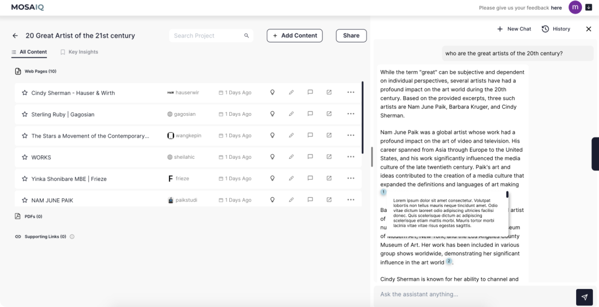
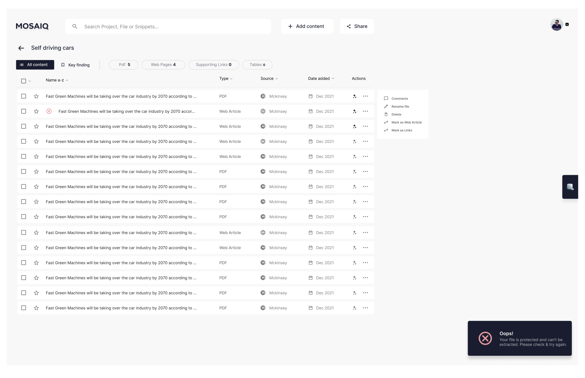
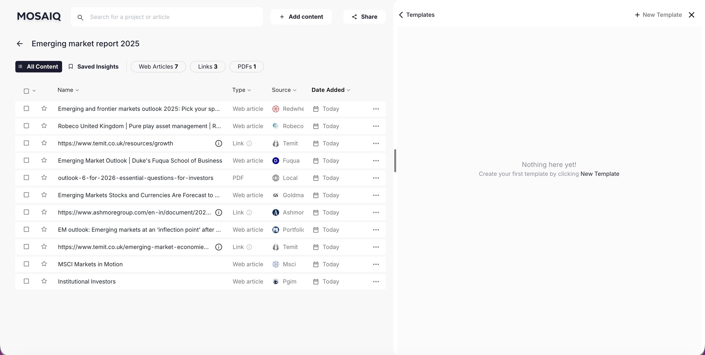
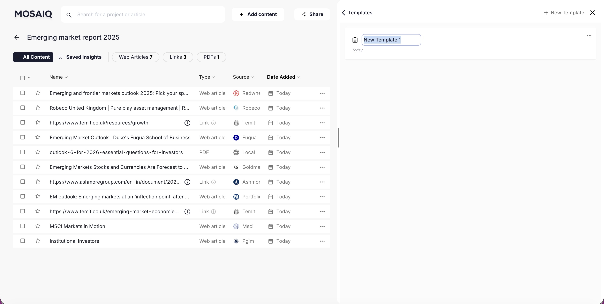
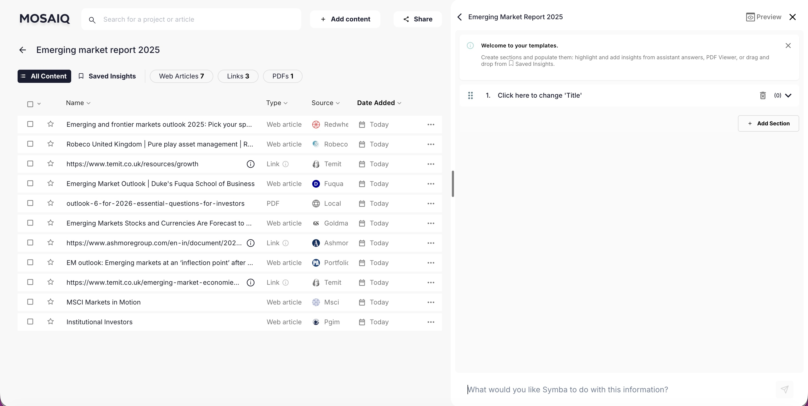
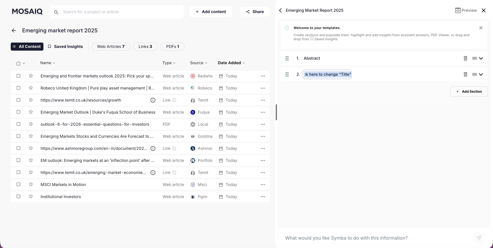
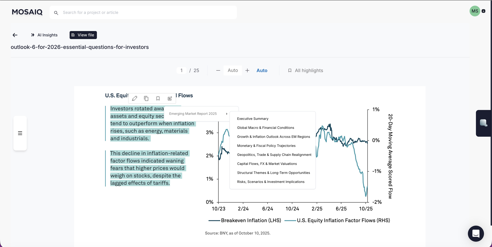

MosaiQ Labs
Integrating AI into workflows
MosaiQ Labs
Junior UX/UI Designer
2023 - 2025
At MosaiQ Labs, I designed UX/UI for an AI-driven research platform in close collaboration with developers. My work focused on creating clear, trustworthy AI interactions, reducing cognitive load, and helping users confidently work with complex systems.

When I joined Mosaiq Labs in 2023, the company's mission was to design a digital platform to facilitate knowledge workers' workflow through the integration of an AI Assistant. At the time, the integration of AI into workflows was just beginning to be seen, and there was, and there still is, a degree of uncertainty and scepticism towards the abilities of AI to complete the job up to the desired standards. Nevertheless, the exponential growth of AI in the past few years, has shifted the tables around and now the "Add-on" AI has become a main feature. It was really exciting working on this project as it gave me first hand experience of how the human-machine relationship is shifting.
When I joined the startup, there was a beta test group providing feedback on the product. Moreover, after each demonstration with a client, the design and dev team would liaise with the sales, to keep on track with users' needs, to tackle ongoing or new pain points, and to provide a consistently strong experience.
NOTE: If I could go back, I would allocate more time and resources to the research phase. In fact, I'm convinced that if the design team had the chance to lead user testing sessions, we would have been able to better understand users' flow, to faster individualise pain points, and to design more intuitive and scalable features.
EMPATHYSE
Competitor Analysis
Heuristic Evaluation
Insight Definition
User testing
IDEATION
Brainmapping
"How might we..."
PROTOTYPE
Wireframing
Testing
TEST & VALIDATION
Modify the design
UI
Our target audience was primarely finance consultants — highly skilled at understanding market dynamics and driven by making confident, high-impact investment decisions for their company and clients.
Defining insights from data analysis:
-
Users need to collect, store, and easily browse through large volume of data
-
Users need to synthesise large volumes of data
-
Users need to quickly organise information to produce reliable deliverables

Image of the person we created to reprent our target audience. The image is blurred due to NDA.
CASE STUDY
Collecting large volume of data in one place
When I started, the platform looked fairly different to its current design. Its capabilities to upload and store files were limited, hence not all kid of files could be uploaded nor analysed by the AI. This one also was slower at analysing files, and its scope restricted to the uploaded files as opposed to the web.
Translating insights into "How might we..."
-
How might we improve the exsiting environment for users to collect, find, share, and browse through documents in one click? (if possible).
-
How might we offer a quick way to order, or filter, the collected files?

Old UI showing the database list supporting only three kind of files: PDFs, Web pages, and Links. On the right, the assistant is open showing the answer to a query. The coursor is hovering the citation number showing the citation bubble open.

Latest UI showing a broader list of file types, as well as tabs and filters to skim through the database
Half-inspired by the "Finder" design and Gmail's design, and due to the increase capabilities of the platform to support file types, we gave the page a good re-vamp.
-
Added the check-box to facilitate the selection of one or multiple files
-
Included tabs at the top of the database, to order files according to the preferred criteria for faster browsing
-
Designed filters and position them above the tabs to allow for fast skim through the files
-
Included visual feedback for failed uploads. In fact, despite the great improvement of the machine, some files, especially web pages which content was restrcited by copyright, were still a difficult pill to digest and upload


MosaiQ extension open, with some of the opened tabs selected
-
To "Add Content" to the project, or to "Share" the project's content, we added two dinstinc CTA at the very top of the page, next to the search bar.
-
Through the download of the MosaiQ Lab extension, users were also able to add multiple pages to their project with one click, which was pretty handy during the first stages of the research process.

“I just know where to put all my data and analyze it, which makes my process much smoother"
"Whether I'm preparing a financial report or gathering passive insights for future reference, MosaiQ ensures everything is in one place. The ease with which I can transition from passive data accumulation to active analysis has transformed our workflows."
Samantha, Financial Associate - Finance
“I’ve accumulated data and been able to produce investment memos 5x faster"
"From accumulating insights on emerging sectors to diving deep into potential investments, MosaiQ is my go-to. It organizes both my data and my thoughts, helping me pivot from passive understanding to active decision-making effortlessly."
Jasmine, Associate - Venture Capital
Synthesise data - AI interaction
Synthesising data is the primarily function of the AI Assistant as well as the most critical part of users' workflow. Users heavily rely on the AI to process data, and to provide quick and reliable answers. In this context, design challenges spammed from technical interactions to psychological ones, and the introduction of the machine's thinking process.
How might we offer clear heauristics and visually providing cues to users of what is the assistant doing, including with which article/s is it interacting with?
How might we design ways for users to chat with the assistant in ways that resemble a natural conversation flow?
How might we incorporate ways for users to view the source from which the answer has been extracted from?

When the assistant interact with any specific file from the database, the selected files' background changes colour to strengthen the visual cue between selected and unselected articles.
On top of it, we added a “Reply to | 4 files” cue confirming the files analysed by the AI. We've added this cue to reinforce the visual feedback as selected files might not always be visible to the user.

Influenced by the ChatGPT design, we’ve iterated on various version of the "reasoning behind the process". Eventually, we agreed that the thinking process should be triggered by the Logic CTA, as if enabled by default, it would create visual noise and break the communication flow.
While we iterated on the location of the "thinking process", we ultimately concluded that, as part of the conversation, it would make sense to have it inside the main chat placeholder.

Just like in a face-to-face chat with a person, it is normal for the conversation to go back and forth, and take different tangents. New information, or different perceptions around an issue, enrich, confirm, or disprove our knowledge, requireing a reshape of the idea forming in our head.
And so it happens when researching. The more information we acquire, the more the back and forth before a cohesive thought is conceived. In this regard, the more sophsticated the assistant became in answering queries, the higher the need to create a conversation flow that resemble the natural one. To achieve this result, we enabled the "Reply" function, which allowed users to ask questions about a specific segment of the answer.


The more sophsticated the AI became, the stronger the need to trace back the source of an information, or understanding the context in which that information has been provided.
-
Bigger citation bubbles to show more text, hence provide a more comprehensive context in quick view mode
-
Enable citation bubbles to show graphs, tables, and other non-text based data
-
Add a View in source link to allow users to view the segment in its original source for a better understanding of the context from which the information has been extrapolated from

Synthesising a series of prompts into one task - Introducing AI Modules for faster data processing and more accurate results
However, we soon realise that all the prompt that users were giving to the AI, could easily be translated into AI Modules, aka lines of code that tells the AI what to do, and how to delivery it.
How might we integrate AI Modules in the flow?
At this stage, the AI is capable to digest and synthesise a great deal of information, but still, it requires time to write down, every time, the steps to achieve the task at hand. This is where AI Modules brought the real revolution! With one click, users were able to skip all the steps, and achieve the wanted result! I was so impressed with our Dev team!
“The perfect companion throughout my research & report building process”
"Working in market research means juggling vast amounts of data. MosaiQ has been pivotal in helping me centralize this data. Whether I'm passively building an industry understanding or actively preparing a report, the platform ensures I'm always steps ahead."
Carlos, Research Coordinator - Market Research
Organising information - building a report
How might we offer a space in which users can structure their deliverable while gathering information?




